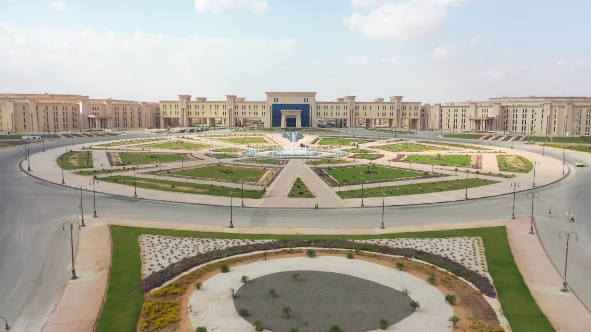
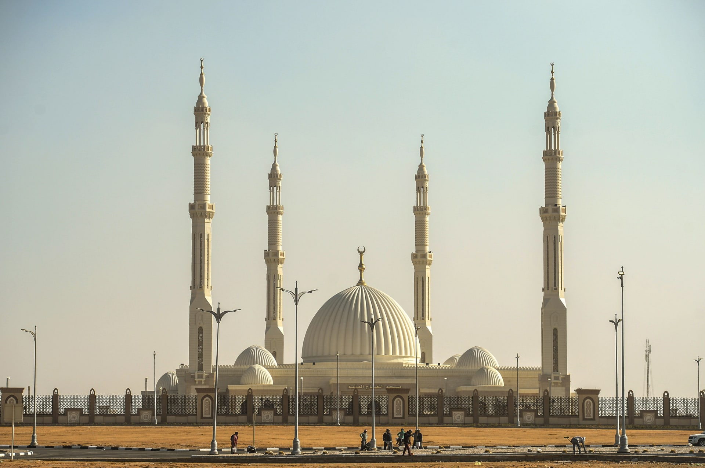
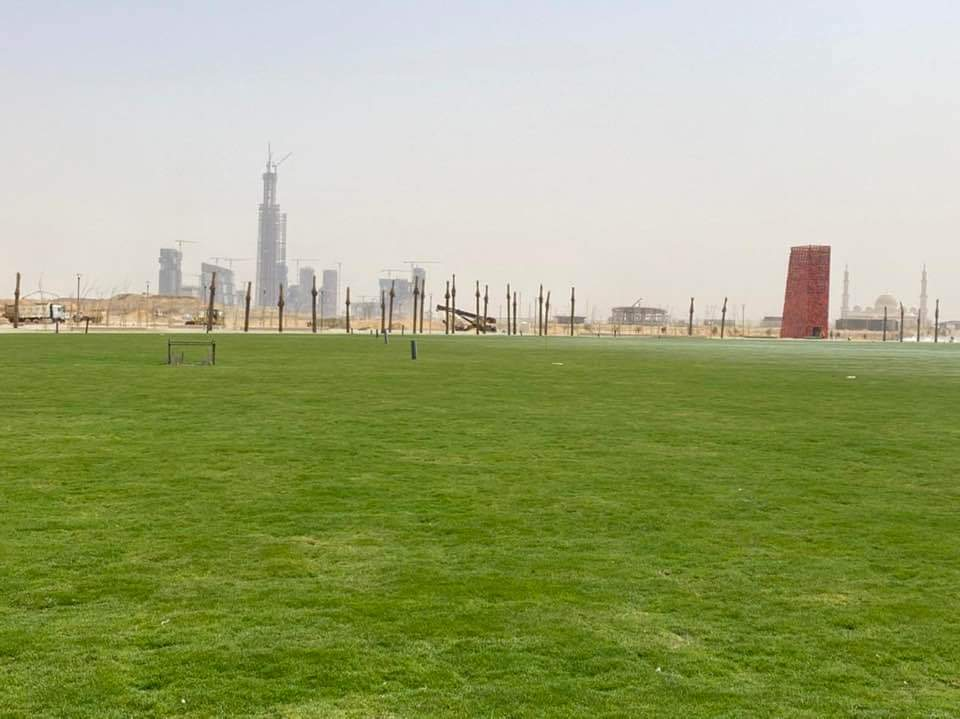

Define the administrative capital
The new administrative capital is the capital of the future Arab Republic of Egypt, an Egyptian city A new fourth generation technology city, located in Cairo Governorate, and managed through the Administrative Capital Development Company Omrania, established by decree of the President of the Arab Republic of Egypt Abdel Fattah El-Sisi No. 57 of 2016 and announced Its establishment during the Conference for Support and Development of the Egyptian Economy held in Sharm El-Sheikh from 13 to 15 March 2015 and a contract was signed with the United Arab Emirates to establish it during the conference activities. The area is The city's total is about 170,000 acres (688 km²), which is larger than the area of Singapore and four times larger than Washington, the capital of the United States of America, is about 60 km away from Cairo east, and about the city of Suez about 65 km in the direction of the west, and it is planned to accommodate approximately 6.5 million Nesma upon completion of its entire construction phase

Build start date
The administrative capital was established to alleviate overcrowding in Cairo, and to be the capital The new headquarters will be the seat of governing Egypt by the end of June 2022, when the headquarters of the Presidency of the Republic, the Presidency of the Government, and the Council will be transferred Representatives, the Senate, ministries, government agencies and agencies, as well as embassies and consulates of foreign countries, It will be the financial center of Egypt, as it has the financial and business district, which will include headquarters and regional offices For major Egyptian and international companies and banks, the city is divided administratively into 20 different districts and regions uses, and will also include, for example, the strategic state headquarters, the city of arts and culture, Egypt's International Olympic City, the City of Knowledge, and the Green River, which will extend for more than 35 km from what Makes it six times larger than Central Park in New York City

Financial and Business District
It is the financial center of the new administrative capital, and it was established to be a center and headquarters Regionally for major Egyptian and international companies and banks, it is located west of the regional ring road between the two axes of Mohamed Bin Zayed North and South, on an area of about 1,703 km², with investments amounting to about $3.4 billion An American being built by the Chinese "CSCEC", the neighborhood includes in its first phase 18 towers with heights ranging from 100 to 400 meters, a variety of 10 towers with administrative activity, 5 towers with residential activity, and 3 towers with mixed activity, one of the most important towers Located in the neighborhood is the iconic tower, which is about 385 meters high and will become the tallest tower in Egypt and the continent Africa also includes the Infinity Towers with a height of 200 meters, Diamonds with a height of 200 meters, and the Crown of Egypt with a height of 170 meters, and others, the entire project is scheduled for delivery in February 2023.

State Strategic Command Center
It is the new headquarters of the Egyptian Ministry of Defense. The establishment of the new headquarters aims to be The largest in the Middle East, the headquarters extends over a total area of 22,000 acres, and the headquarters includes 13 areas - per It has its own role - making it the largest defensive headquarters in the world. Octagon is part of a large corporation, which It includes places of worship, clubs, hotels, schools, stadiums, housing projects, shopping centers, hospitals and service complexes Civil and administrative. The place is secured by two units of the Republican Guard, and other security means
City of Arts and Culture
It is an Egyptian artistic cultural institution, established to be a beacon of artistic, intellectual and cultural creativity in Egypt over an area 127 acres and was opened on November 20, 2021. The city includes many facilities, the most important of which is the Museum of the Capitals of Egypt [Dar] Opera, Ramses II Theater, a large auditorium with a capacity of 2500 people, in addition to a small theater, 2 halls that accommodate 750 people and where special performances are held, the pocket theater that accommodates 50 people, the chamber theater, and the creativity center Artistic, a cinema hall that will be linked to satellites to display various artistic concerts, three Singing and playing training rooms, an audio recording studio with three editing rooms, and an opera museum Its history in Egypt and a Museum of Modern Art with the latest works of Egyptian artists, a Museum of Modern Art in the Opera Garden in it Various contents of international and Egyptian artists, a music library with the international opera archive for listening And viewing, cafeterias, a department for painting, sculpture, music, literature and poetry, in addition to the capital’s library The administrative capacity of 6000 people

Al-Fattah Al-Alim Mosque
It is one of the city's mosques with a distinctive and modern Islamic architectural style. It is located at the entrance to the city The Administrative Capital on the Middle Ring Road, the mosque was built on an area of approximately 106 acres (8600 m²) is the area of the mosque building, and 7000 m² is an outdoor courtyard dedicated to prayer, below which is a “basement” with a daily prayer hall. A "miniature mosque" for men and women, rooms for memorizing the Qur'an, places for ablution, a library, and administrative offices, and the rest The external space is dedicated to buildings, roads and landscapes, the entire mosque can accommodate approximately 17,000 worshipers It includes 6500 ground floors (the main courtyard), 1200 first floors of the "mezzanine floor" (women's chapel), 7000 spaces. External, 2000 The Mini Mosque
Cathedral of the Nativity of Christ
is a Coptic cathedral, which was inaugurated on January 6, 2019 during the celebration of Christmas During the visit of Egyptian President Abdel Fattah El-Sisi and Pope Tawadros II. This cathedral is the largest Size and capacity in the Middle East, where it is located on an area of 63 thousand square meters and has a capacity of more than 8 thousand person.

Green River
is a river-like series of urban parks that, when fully completed, will stretch of more than 35 kilometers, and covering a total area of 6,200 acres, making it six times the size of Central Park In New York City, all twenty neighborhoods of the new capital will be connected by a green river that simulates The course of the Nile River in the center of Cairo, and the project is distinguished by the fact that it will be open for free visits to residents of the capital Administrative, New Cairo and Cairo. Flagpole of the Administrative Capital The largest flagpole in the world, with a height of 207.8 meters The flag of Egypt was hoisted on the flagpole on December 27 2021. The mast is located in the People's Square and includes stands for 1,300 people. The mast consists of 10 links next to a link A mobile responsible for moving the flag. The weight of the mast is 1040 tons of iron and the flag is 60 meters long x 40 meters long.
